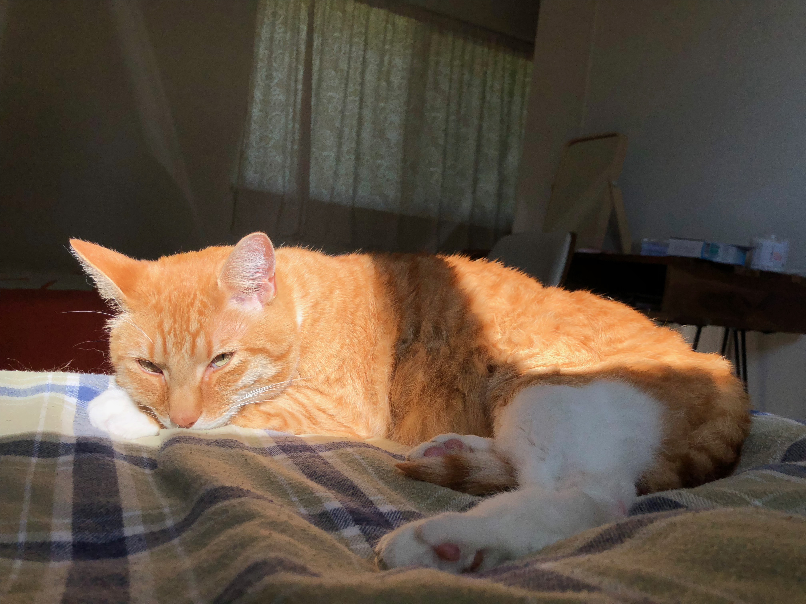

Stephanie's Homepage
About Me
I am an AGPM undergraduate that enjoys making stamps in her free time. I really like cats and hope to have an orange cat someday.

About Me
I am an AGPM undergraduate that enjoys making stamps in her free time.